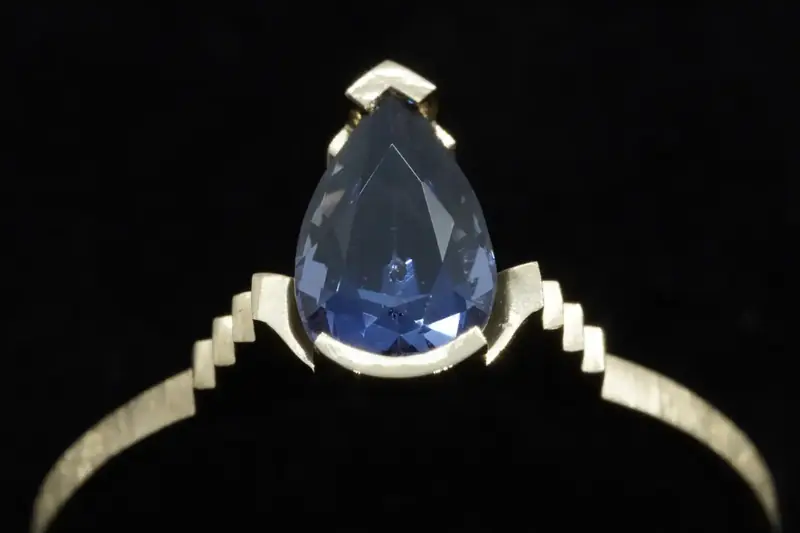
Marébleue
01- Métal
- Or jaune 18ct
- Pierre
- Spinelle bleu
La fusion de l’art et de la précision, où chaque pièce est unique et porteuse d’émotions.
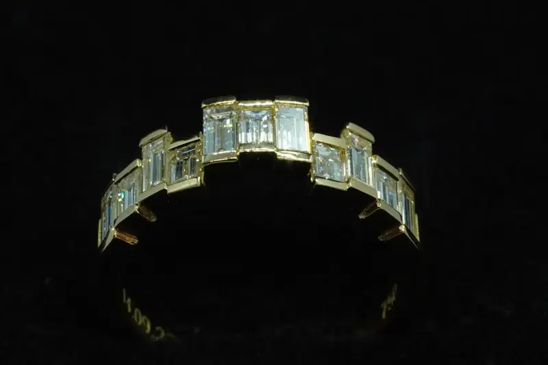
ConstellaraOr jaune 18ct · diamant
01 — L’univers
Du centre de la Terre naît la matière, subissant chaleur intense et haute pression. Chauffée, fondue, martelée et travaillée, elle devient un objet à part entière.
Les créations naissent d’inspirations architecturales, brutes, organiques ou traditionnelles, mais surtout personnelles.
C’est cette dernière qui donne un sens, une signification singulière au bijou.
02 — Les créations

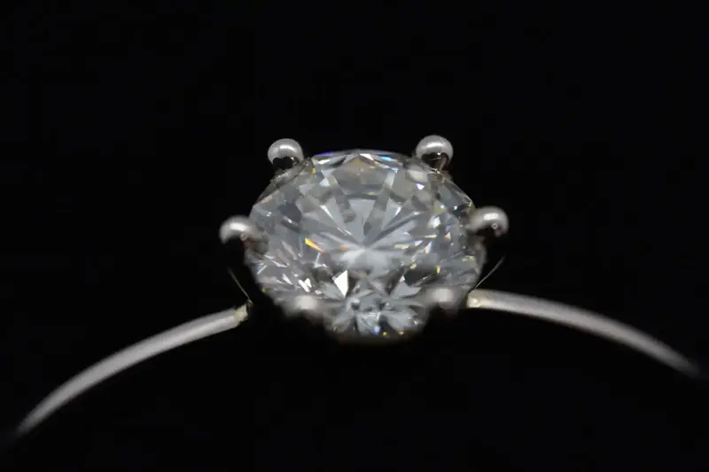
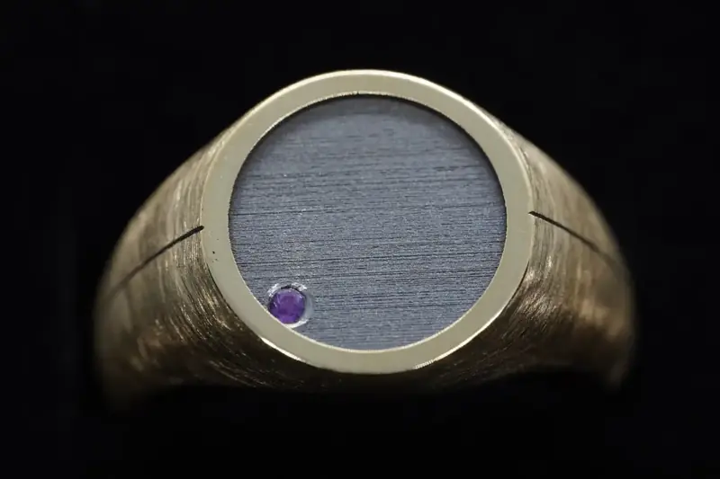
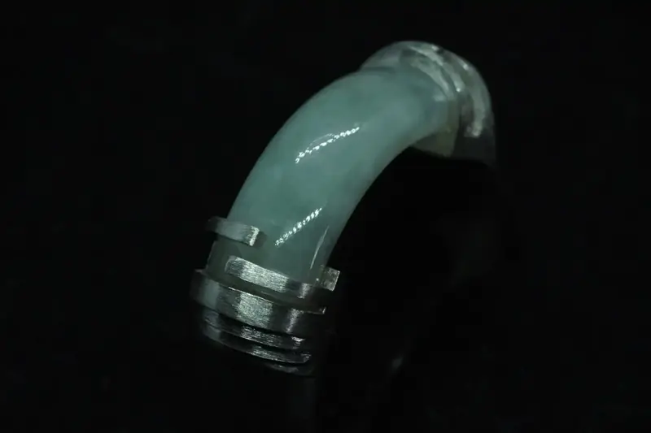
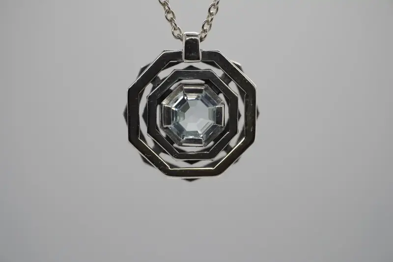
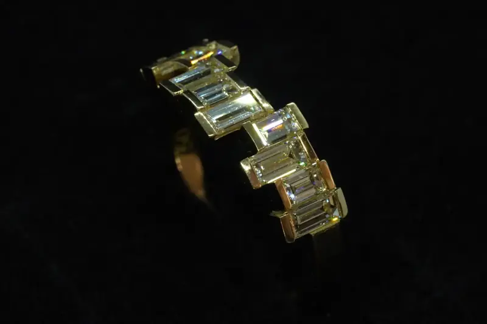
03 — Pierres
Formé de carbone cristallisé, sa dureté exceptionnelle et sa dispersion de la lumière créent son éclat spectaculaire.
Gardien des rois et symbole de loyauté, de la même famille que le rubis, il évoque les ciels étoilés depuis l’Antiquité.
Variété de béryl vénérée par les pharaons et les Incas ; ses inclusions, appelées « jardins », racontent une histoire intérieure.
Pierre de clarté et de sérénité, elle captivait les marins pour sa couleur apaisante.
Née du cœur de l’Afrique, elle offre un éclat bleu-violet unique.
Fragile mais magnifique, elle révèle des feux d’artifice gelés, la magie d’un éclair dans la nuit.
04 — Collaboration
Une collaboration en argent 925 : médaillons, boucles d’oreilles et chevalières.
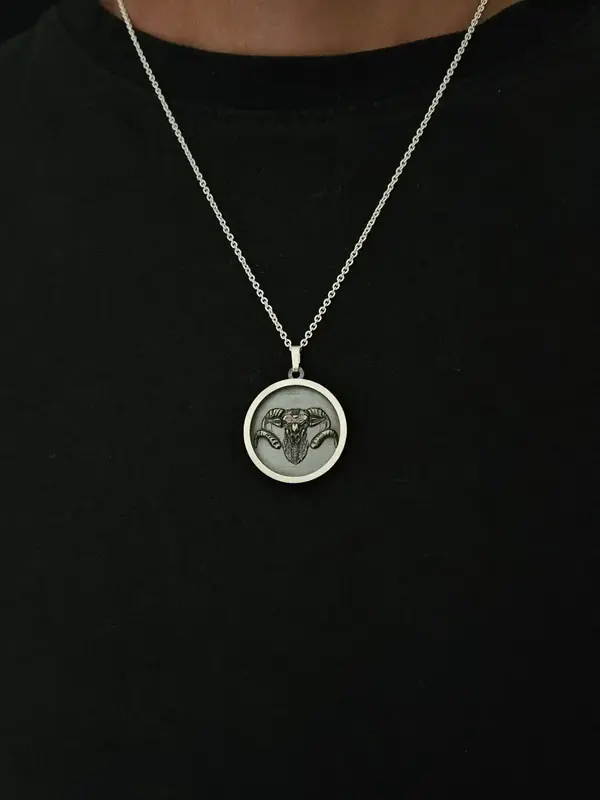
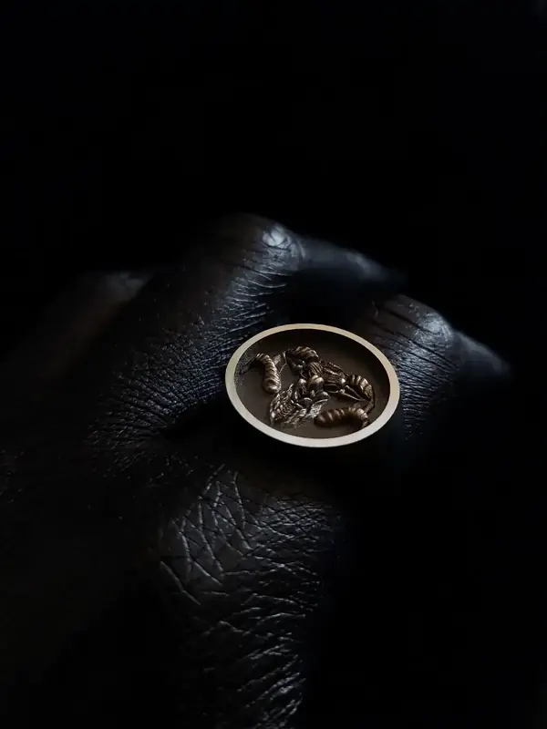
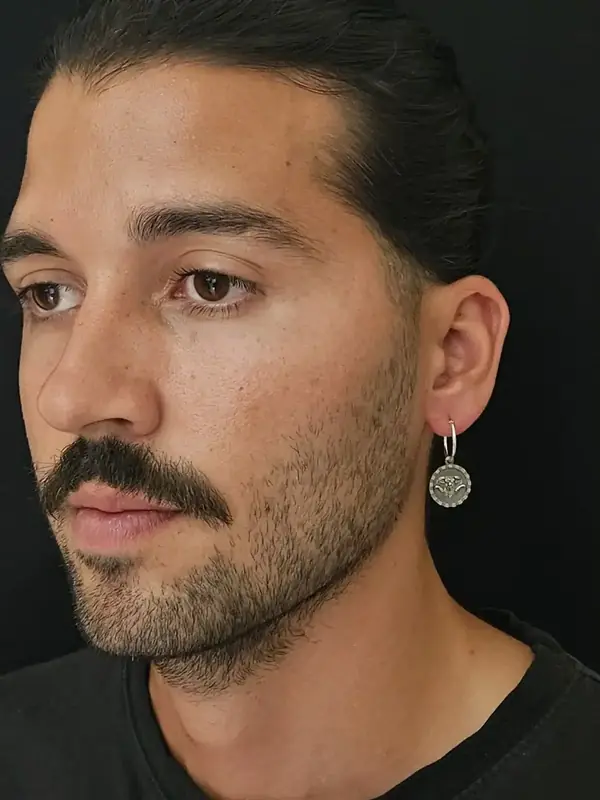
05 — À propos
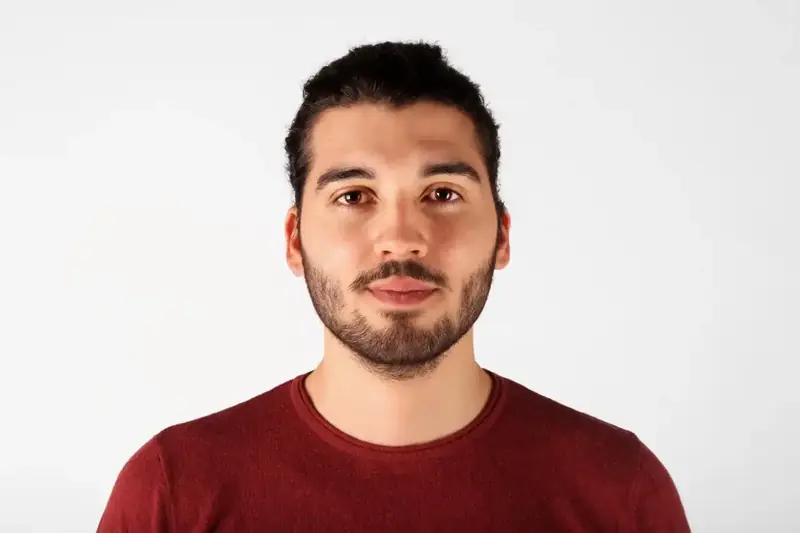
Originaire de Vevey, sa passion pour le microcosme des gemmes l’a conduit à Anvers pour étudier la gemmologie, puis à l’école d’arts appliqués de La Chaux-de-Fonds, en bijouterie. Après plusieurs expériences en haute joaillerie, il vole aujourd’hui de ses propres ailes.
Avec d’autres corps de métiers de la région, il propose des créations personnalisées, entièrement élaborées en Suisse.
06 — Contact
L’atelier vous accueille à Montreux pour en discuter.